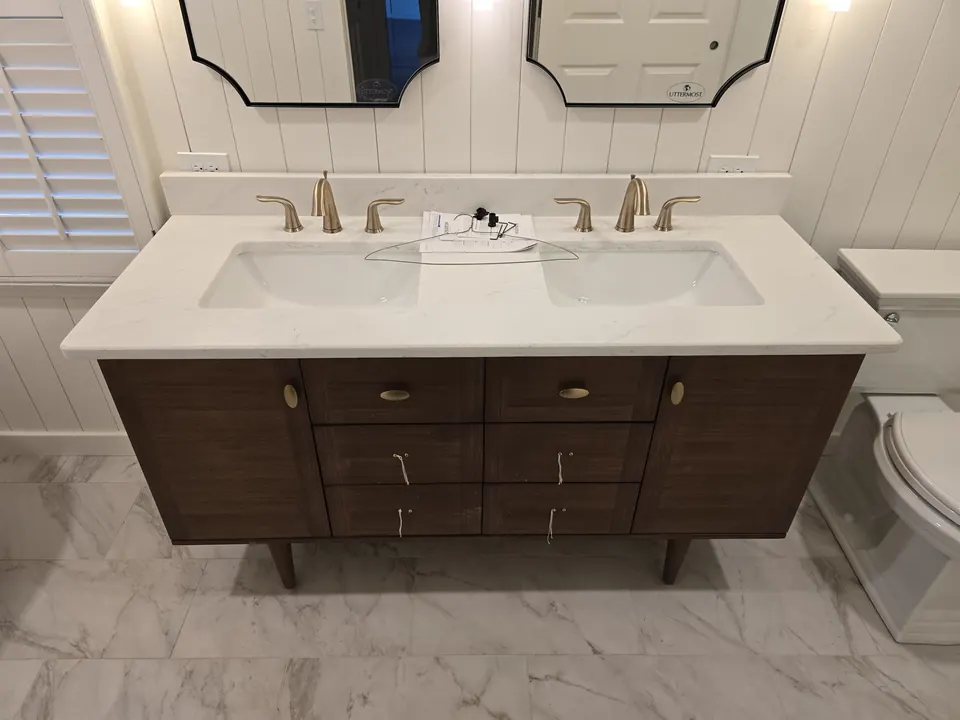
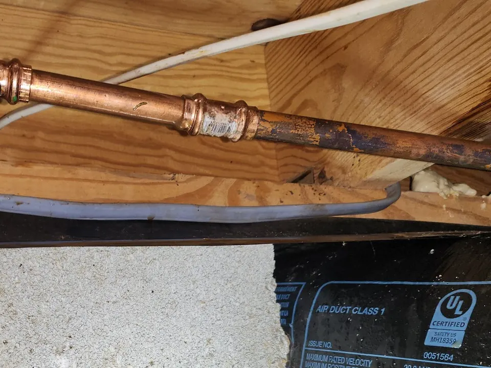

From small leaks to full fixture installations, our experienced plumbers handle every job with care and attention to detail. Whether you are dealing with a clogged drain, a broken water heater, low water pressure, or outdated plumbing fixtures, we’re here to help keep your home safe, efficient, and comfortable.
Schedule Residential Plumbing Here!
Trusted Residential Plumbing Services for Your Home
Your home’s plumbing system is something you rely on every day. When something goes wrong, it can disrupt your routine fast. At Angle Stop Plumbing, we provide a full range of home plumbing services designed to solve problems quickly and prevent bigger issues down the road.

Our residential plumbing solutions include:
- Leak detection and repair for faucets, pipes, toilets, and water lines
- Drain cleaning for sinks, tubs, showers, and backed-up drains
- Toilet repair and installation to restore function and improve efficiency
- Faucet and fixture installation for kitchens, bathrooms, and utility rooms
- Garbage disposal repair and replacement
- Water heater repair and installation, including traditional and tankless systems
- Pipe repair and repiping for damaged, aging, or corroded plumbing
- Water pressure troubleshooting
- Shut-off valve and angle stop replacement
- Preventive plumbing maintenance to help avoid costly repairs
No matter the size of the job, our goal is simple: deliver reliable plumbing service that protects your home and gives you peace of mind.
Why Homeowners Choose Angle Stop Plumbing
Choosing the right plumber matters. You want a company that shows up on time, communicates clearly, and respects your home. That’s exactly what you can expect from Angle Stop Plumbing.
Local Experience You Can Count On
We understand the common plumbing issues homeowners face and know how to diagnose problems efficiently. Our team uses proven methods and quality materials to help ensure durable, code-conscious repairs and installations.
Honest Recommendations
Not every plumbing issue requires a major repair. We take the time to explain what’s happening, walk you through your options, and recommend practical solutions based on your needs and budget.

Clean, Professional Service
Your home is important to you, and we treat it that way. We work carefully, keep the job site tidy, and aim to minimize disruption while completing your plumbing service efficiently.
Fast Response for Urgent Plumbing Issues
Some plumbing problems just can’t wait. If you have an active leak, a backed-up drain, or no hot water, our team works quickly to restore your plumbing and reduce damage to your home.
Our Residential Plumbing Services
Leak Repair
Even a small leak can waste water and lead to bigger damage over time. We repair leaking pipes, dripping faucets, running toilets, and hidden plumbing leaks before they turn into costly problems.
Drain Cleaning
Slow or clogged drains are more than an inconvenience. We identify the cause of the blockage and clear drains safely to restore proper flow in your sinks, tubs, showers, and household lines.
Water Heater Services
Hot water is essential for daily comfort. We provide water heater repair, replacement, and installation to keep your system running efficiently. If your unit is aging, making noise, leaking, or failing to produce enough hot water, we can help you find the right solution.
Toilet Repair and Installation
A toilet that runs constantly, clogs frequently, or leaks around the base can waste water and create frustration. We repair and replace toilets to improve reliability, comfort, and efficiency.
Faucet and Sink Plumbing
From kitchen upgrades to bathroom repairs, we install and service faucets, sinks, shut-off valves, and related plumbing components to keep everything working properly and looking great.
Pipe Repair and Repiping
Older pipes can corrode, leak, or restrict water flow. Whether you need a targeted pipe repair or a larger repiping project, we provide solutions designed to improve performance and protect your home.
Signs You May Need a Residential Plumber
If you notice any of the following issues, it may be time to call Angle Stop Plumbing:
- Unexplained increases in your water bill
- Persistent dripping faucets or running toilets
- Low water pressure throughout the home
- Slow drains or repeated clogs
- Water stains on walls or ceilings
- No hot water or inconsistent hot water
- Strange smells coming from drains
- Gurgling sounds in pipes or fixtures
- Discolored water from faucets
Addressing these problems early can help prevent water damage, mold growth, and more expensive repairs later.
Plumbing Solutions for Repairs, Upgrades, and Maintenance
At Angle Stop Plumbing, we do more than fix urgent plumbing problems. We also help homeowners improve their plumbing systems with thoughtful upgrades and routine maintenance.
Whether you are remodeling a bathroom, replacing old fixtures, upgrading to a tankless water heater, or improving water efficiency throughout your home, we provide expert guidance and dependable installation services.
Routine plumbing maintenance can also help identify worn parts, hidden leaks, and drainage issues before they become emergencies. Investing in preventive service now can save time, money, and stress later.
Schedule Residential Plumbing Service With Angle Stop Plumbing
When you need dependable residential plumbing services, turn to the team at Angle Stop Plumbing. We are committed to providing quality workmanship, responsive service, and honest solutions for homeowners.
If you need help with plumbing repair, drain cleaning, water heater service, fixture installation, or general home plumbing, contact Angle Stop Plumbing today to schedule service.